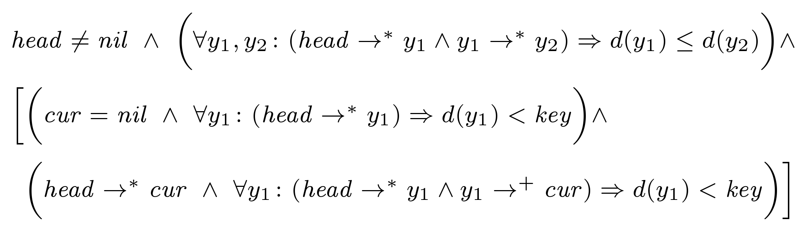
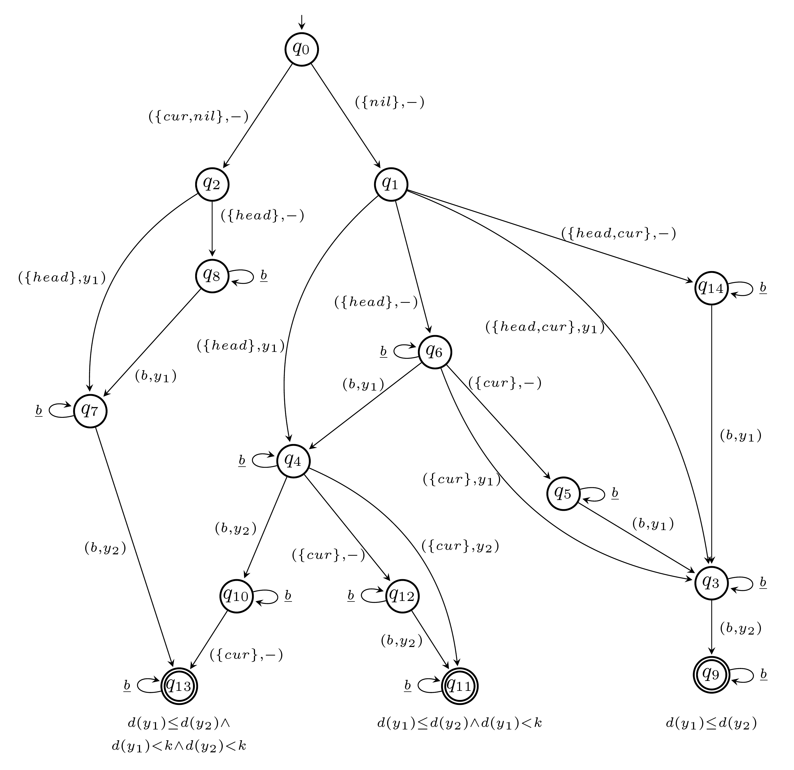

Learning Universally Quantified Invariants of Linear Data Structures |
|
This research project presents a novel learning based approach to the synthsis of loop invariants for programs manipulating linear heap data structures such as lists and arrays. Please see the following paper for technical details.
Learning Universally Quantified Invariants of Linear Data Structures. The full version of the above CAV paper can be accessed from arXiv at: Source CodeWe implemented a prototype of our technique in C++. The source code of this implementation can be found below. Please note that we are currently cleaning and improving the code. A much improved version will be online very soon. Note that our implementation requires the libALF library to run, which is included in the source archive.
ExampleBelow, we show the results of our prototype on the sorted-list-find program. This program searches for a given key in a sorted list. The code for the program looks as follows. bool sorted_list_find(item* head, int key) {
item* cur;
cur = head;
while (cur != NULL && cur->data < key) {
cur = cur->next;
}
if(cur == NULL || cur->data > key)
return false;
else return true;
}
An potential invariant is the following. Note that the invariant uses two universally quantified variables y1 and y2.

The output of our implementation is the following EQDA. 
It ranges over the pointer variables head, cur, and key as well as the universally quantified variables y1 and y2. Missing transitions point to a sink state labeled with the data formula false, which is not shown. The initial state is q0. States for which no data formula is displayed are implicitely labeled with the data formula false. The learning algorithm already learns an elastic QDA and, hence, elastification was not applied. Note that the learned EQDA represents a loop invariant. |
|
|
|
Last Updated: Apr 25 2013. |